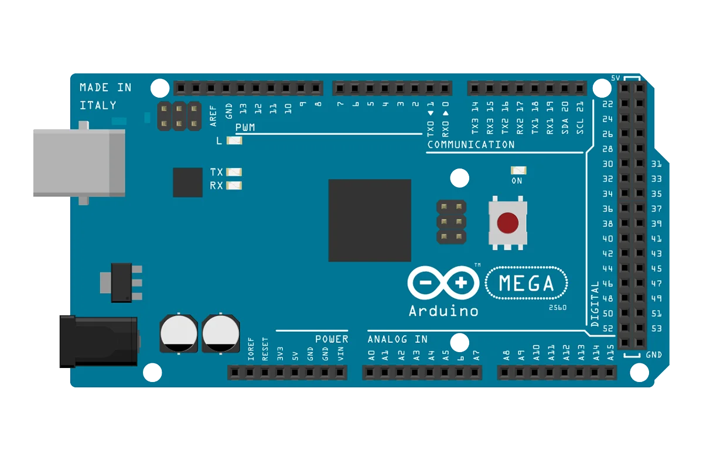
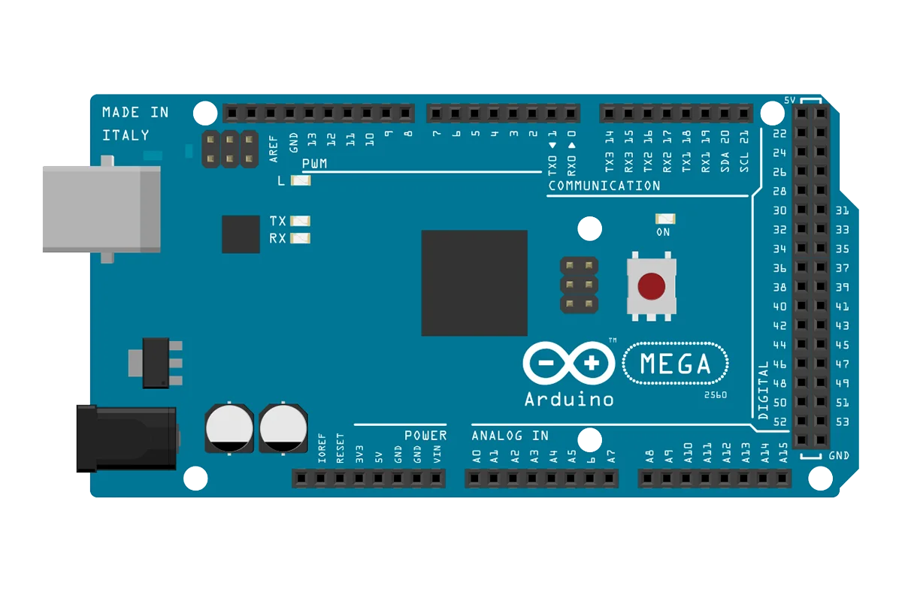
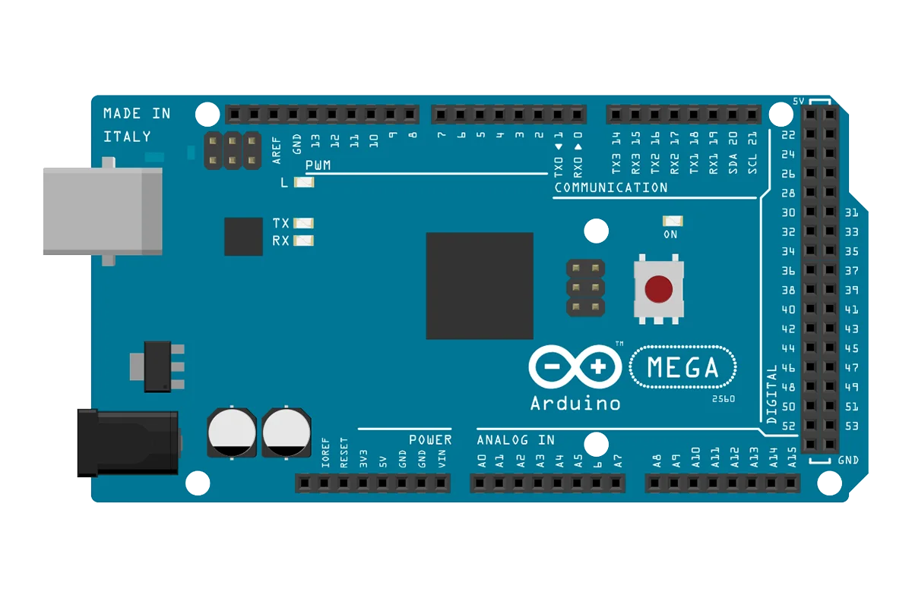
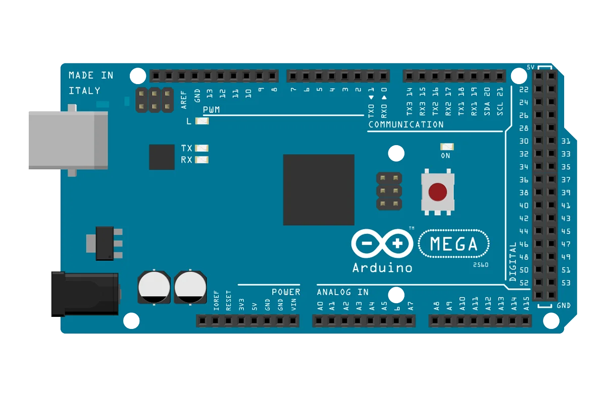

Browse Arduino projects from beginner to advanced level. Click on any project to see full explanation, circuit, and code.

Learn how to blink an LED using Arduino. Perfect first project for beginners.
build a LED Pattern Project using Arduino and multiple LEDs.

Use a push button to control an LED with Arduino. Learn about digital input and output.

Control a servo motor's position with Arduino. Great for robotics and automation projects.

Measure distance using an ultrasonic sensor and Arduino. Useful for obstacle detection.
Detect ambient light levels with a LDR Sensor and Arduino. Ideal for automatic lighting systems.

Interface an LCD display with Arduino to show text and data. Perfect for user interfaces.

Measure temperature using Arduino and a sensor. Display readings on Serial Monitor.
Use an IR sensor with Arduino for object detection. Great for security and automation projects.
Generate sound with a buzzer using Arduino. Learn about digital signals and timing.
Use a potentiometer to control variables in your Arduino project. Great for adjusting brightness or volume.

Monitor soil moisture levels with Arduino. Perfect for smart gardening and plant care automation.
Stay tuned for more exciting Arduino projects.